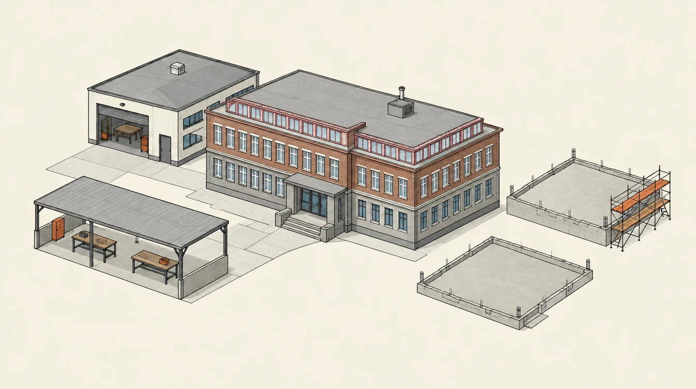

Ve výstavbě.
Někdo staví hru. Někdo shání první zakázku. Tady je vidět, co vzniká — a co přijde dál.
Rozpracováno / 00
Každý projekt má vlastní tempo. Tady je jeho poslední veřejný posun.
První ukázka má místo tady.
Týmy teprve vybírají veřejné ukázky svých projektů.
Pracuješ na něčem? V Discordu otevři svůj projekt a vyber výsledek, který chceš ukázat ostatním.
Na web se dostane až to, co tým potvrdí ke zveřejnění.
Pro tento výběr tu není žádný projekt.
Ministerstvo roste s námi.
Každý projekt má vlastní tempo. Společně budujeme zázemí, které nám pomůže dál.
Se třemi dostupnými ukázkami už si máme co navzájem vyzkoušet.

SPŠ Kladno / plán přístavebVybraná etapa: Společné testování
Tvoje projekty zůstávají tvoje. Přístavby slouží všem třídám.
Prozkoumej přístavby 01—04
-
01Společné testováníTeď společně · Ve výstavbě
Získáš lidi, kteří zkusí tvou hru, web nebo prototyp. A ty otestuješ jejich práci.
- Ukázky s odkazem0 / 3
Se třemi dostupnými ukázkami už si máme co navzájem vyzkoušet.
Připravit svoji ukázkuV Discordu: Můj projekt → Další možnosti → Připravit výlohu
Vyber posun s odkazem, který spolužáci otevřou. Ukázka může být rozpracovaná.
-
02Ověřené projektyVe výstavbě
Otevře se přehled zveřejněných projektů s učitelem ověřeným kladným výsledkem. Najdeš skutečné příklady pro spolupráci; není to záruka kvality služby.
- Projekty s plánem0 / 3
- Týmy s ověřeným výdělkem0 / 1
Potřebujeme vědět, co týmy dělají, a mít první zkušenost se skutečnou zakázkou.
Doplnit plán projektuV Discordu: Můj projekt → Plán
Placená pomoc mezi studenty za vlastní KR funguje už teď. Přístavba odemyká samostatný přehled zveřejněných týmů s ověřeným výsledkem.
-
03Herní burzaVe výstavbě
Otevře se obchodování herních akcií projektů. Rozhoduješ podle jejich skutečných výsledků; nákup akcie neposílá KR autorovi projektu.
- Týmy se zápisem ve dvou týdnech0 / 8
- Týmy s kladným ověřeným výdělkem0 / 3
- Dobrovolné přihlášky na burzu0 / 8
Zápisy počítáme ve dvou různých týdnech za posledních 28 dní. U výdělků se počítají různé týmy.
Trh potřebuje více týmů, průběžné informace a ověřené výdělky.
Zapsat posun projektuV Discordu: Můj projekt → Zapsat posun
Jde o herní akcie a kredity. Skutečné peníze sem nevkládáš.
-
04Herní fondyVe výstavbě
Sestavíte společné herní portfolio z více projektů a budete se učit rozhodovat jako tým.
- Otevřená burzaJeště ne
- Aktivní týmy2 / 12
Nejdřív musí fungovat burza a být z čeho vybírat.
Tuhle etapu připravíme, až bude potřeba. Teď stačí pokračovat ve vlastní práci.
Vyber přístavbu na budově nebo v seznamu.
Podmínky plníme společně. Otevření další etapy domluví učitel. Herní burza a fondy používají pouze kredity.
Kronika
Důležité momenty naší společné stavby.
Ministerstvo bylo založeno. Ekonomika zatím nedorazila.
První tým si založil projekt.
V ministerstvu staví už pět týmů.
První žádost o pomoc byla vyřešena.
V ministerstvu staví deset týmů.